IX. BÖLÜM
SEMBOLLER, DESENLER, GRAFİKLER VE DİYAGRAMLAR
Mu Ülkesi’nin Kozmogonik Diyagramı, insan tarafından yazılmış ilk kitaptı. Bu diyagramın izini 35 bin yıl öncesine kadar sürmeyi başardım. Daha ne kadar önceden beri kullanıldığını kimse söyleyemez, hatta tahmin bile edemez.
Tüm antik uluslar anayurdun diyagramını kopyalamıştı: Yucatan Mayaları, Hindistan Naga-Mayaları, Babilliler, Asurlular, Mısırlılar ve Kuzey Amerika’nın güneybatısındaki Pueblo Kızılderilileri.
Bunlar arasından yalnızca biri orijinal anlamıyla beraber basit yapısını korumayı başardı: Yucatan Mayalarına ait olan. Geri kalanların tümüne, Pueblolarınki hariç, yeni şekiller ve dogmalar eklendi. Orijinal şekillerin bazılarına yeni anlamlar katılmasıyla anayurdun bu basit ve güzel sembolü, acınacak
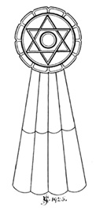
Yazılan İlk Kitap
Mu Ülkesi’nin Kozmogonik Diyagramı: 35 bin yıldan daha eski.
derecede çarpık bir hâl aldı. Bu değişikliklere, ahlaki değerleri hiçe sayan Mısır ruhban sınıfı neden oldu. Bunlar önce şeytanı icat edip, ona bir mesken bulmaları gerektiği için cehennemi uydurdular. Beş bin yıl önce ne şeytan, ne de cehennem biliniyordu. Bu uydurmaların halk üzerindeki etkilerini gören Hindistan ruhban sınıfı, Set’i Şiva ile takip etmekte gecikmedi.
Mu’da rahip adayına bu kitabı iyice öğrenmesi, Tanrı ve ahiret inancının kaynağı olarak kabul etmesi öğretilirdi; tıpkı şimdi Kitabı Mukaddes’in çocuklara öğretildiği gibi.
Bu kozmik diyagramın deşifresinde, kesişen iki eşkenar üçgenle çevrili merkezi bir çember olduğu görülebilir. Bunlar tek bir şekil oluşturuyorlar ve yalnızca tek bir anlamları var. Bu iki üçgen, başka bir çemberle sarılmış, böylece çember arasında on iki bölme oluşuyor. Dıştaki çember de on iki dantelle çevrilmiş. Ana şeklin altında sekiz bölmeli bir şerit var.
Merkezi çember Tanrı’nın kolektif sembolü olan güneşin, Ra’nın bir resmi. Tanrı’nın Cennet’te bulunması gibi, bu iki kavram beraberce resmedilmiş durumda. İki çember arasında, kesişen üçgenlerin oluşturduğu on iki bölme, Cennet’in on iki kapısını temsil ediyor. Her sembol bir erdeme karşılık geliyor, yani Cennet’in kapılarından geçecek bir ruh bu erdemlerin tümüne sahip olmalı.
Dıştaki çember Mısırlıların Amenti olarak adlandırdığı ara dünyayı, öte dünyayı simgeliyor. Ara dünyayı çevreleyen on iki dantel, on iki günahı temsil ediyor. Ruh, ötedeki dünyanın kapılarından girmeden önce on iki dünyevi günahtan arınmış olduğunu kanıtlamak zorunda.
Aşağıya doğru uzanan şerit, ruhun Cennet’e ulaşmak için yükselmesi gerektiğini gösteriyor. Burada kullanılan “yükselmek” kelimesinin antik anlamının irtifa kazanmakla bir ilgisi yoktu. Bu, mükemmelliğe giden yolda daha üstün bir mertebeye ulaşmak demekti. Şeridin sekiz bölmesiyse ruhun ötedeki dünyaya girebilmesi için insanın katetmesi gereken sekiz yolu belirtiyordu.
Cennet’e giden bu sekiz yolun ne olduğunu bir önceki bölümde açıklamıştım. Bu on iki günah ve erdemin ne olduğunu ise topluca ortaya çıkarabilmiş değilim.
Mu halkının antik dini inanışlarının modern dildeki düz yazı karşılığı şu şekilde:
“Cennet’e ulaşmak için katetmem gereken sekiz yol olduğuna inanıyorum. Bu sekiz yolu; yani (yolların isimleri) aştıktan sonra, ötedeki dünyaya açılan on iki kapıya ulaşıyorum. Burada on iki dünyevi günahtan; yani (günahların isimleri) arınmış olduğumu kanıtlamalıyım. Daha sonraysa ötedeki dünyadan geçerek Cennet’in kapılarına ulaşacağım. Burada, dünyada on iki erdemi; yani (erdemlerin isimleri) öğrenip yerine getirdiğimi kanıtlamalıyım. Böylece Cennet’in kapılarından geçirilerek, Cennet’in Kralı’nın oturduğu görkemli tahta götürülüyorum.”
Bugün, tüm din ve mezhepler arasında, insanoğlunun anayurdunun bu kayıp halkının sahip olduğundan daha saf ve yalın olanı var mı?
Çok Kollu Figürler: Tabletlerin tercümesini takip eden yıllar boyunca, tabletlerde okuyamadığımız birçok harfin anlamına ulaştık. Yazar ve arkeologların “grotesk tanrılar” olarak adlandırdığı eski sembolik figürleri, ayrıca rölyeflerin tercümesi sırasında; deşifre edilmemiş sembollerin bu oymaların içine, anlamlarını bariz kılacak biçimde işlendiklerini bulduk.
Chandler ve diğerleri şöyle yazmıştı: “Bir tür grotesk Hint tanrıçası.” Şimdikiyse bu “grotesk tanrılar”dan bir örnek ve bunun deşifre ve tercümesinin de göstereceği gibi bu aslında bileşik bir resim ve insanoğlunun Mu ülkesinde doğuşunu tasvir ediyor.
Özellikle Hindistan’da ikiden fazla kolu olan insan figürlerini tasvir eden oyma ve resimlere sık rastlanır. Bu figürler tapınak duvarlarında, eski Hint elyazmalarındaki çizimlerde bulunur ve günümüzde de yerel Hint mücevheratında sıklıkla kullanılır. Bu figürler birer put değil. Bunlar Yüce Yaratıcı’nın ve Yaratılış’ın kutsal sembolleri. İnsana ait ilk yazıları araştıran birinin zaman zaman karşılaştıklarına benzer şekilde, oldukça girift bir tasarım ve karakterdeler. Yedi yüce veya temel kuvvet, nitelik, güç, arzu, emir veya zihne sahip olan sonsuzluğu, Yaratıcı’yı temsil ediyorlar. Bu kelimelerin her birinin çeşitli antik metinlerde kullanıldığını fark ettim. Örneğin: “Birer zihin veya güç olan yedi başa sahip Yılan”, “Yedi emriyle dünyayı var eden ve onu yönetecek olan insanı yaratan, tüylerle kaplı Yılan.”
Bahsettiğim çok kollu figürler şüphesiz anayurt kökenli olsa da bunlara ilk olarak antik Brahmanlar arasında rastladım. Brahmanların kozmogoni, bilim ve medeniyet sanatlarını Nagalardan öğrendikleri, Hindistan’da herkesçe bilinen bir gerçek. Önce Naga, daha sonra Danava olarak bilinen Hindistan Mayaları bu kıtaya, Arilerin adı daha Hindistan’da duyulmaya başlamadan binlerce yıl önce anayurttan geldi. Brahmanlar ve Nagalar da Yaratıcı’yı simgelemek için Yedi Başlı Yılan figürünü kullanıyorlardı. Yılan figürü yerine insan figürü, özellikle önemli yaratımları temsil etmek için kullanılıyordu.
Deşifre ve tercüme için bu figürlerden birinin Bombay yakınlarındaki Ajanta Tapınak Mağaraları’nda bulunan bir oymasını seçtim. Anayurdun suların üzerine yükseldiği, verimli ve bereketli kılındığı, insanın ortaya çıkmak üzere olduğu zamanı simgeliyor oluşu özellikle ilgi çekici. Merkezde bir insan figürü var. Merkezi figür bir insana ait ve yedi uca sahip, yani Yaratılış’ın rakamını gösteriyor. Bu örnekte yılan yerine daha üstün bir sembol, insan kullanılmış. Şimdiye dek insanın özel bir yaratım olduğu ve dünyayı yönetecek güçlerle donatıldığı defalarca tekrarlandı. Bu birçok yönden şimdi deşifre edeceğim bu tabloyla da örtüşüyor.
Merkezi figür incilerden oluşan ve Tanrı’ya atfedilen antik kutsal tacı takıyor, bu da onun bir kral olduğunu gösteriyor. Yaratılışın ortasına yerleştirilmiş, dolayısıyla o yaratılışın kralı. Sol üstteki elde bir meyve, sağ elinde de Mu’nun sembolik çiçeği olan soylu lotusu taşıyor ve böylece anayurdun yaşamaya elverişli olduğunu anlatıyor.
Figür suda ayakta durur hâlde gösterilmiş. Bize bunu anlatan iki belirgin sembol var. Bunlardan ilki, bacakları ve gövdesinin alt kısmı boyunca uzanan yatay, düzensiz çizgiler. İkincisi, sol alttaki elde tutulan tek başlı yılan. Yılanın başını tutan elin aşağısında yılanın gövdesi bir koza hâlini alıyor ve bu kozadan dökülen tohumlar görülüyor. Bunlar doğal canlı hücrelerini ve eskilerin deyimiyle kozmik yumurtaları temsil ediyor. Bu tohum ve yumurtalar henüz açılarak hayatı doğurmamış. Hayat hâlâ içlerinde uykuda yatıyor. Zamanla yaşam gücü bu tohumlara hayat veriyor. Dolayısıyla, doğal yaşamın ilk önce suda başladığı anlatılıyor. Eskilerin denize “Yaşamın Anası” demelerinin sebebi de bu. Bu antik hikayenin doğrulu-
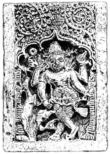
Sembolik Oyma
ğu, erken Paleozoik zamana ait kayalar tarafından da kanıtlanmış durumda.
Resimde şimdiye kadar olan kısımda doğal hayatın nasıl ortaya çıktığı ve nasıl yaratıldığı anlatıldı ve suların üzerinde yaşanabilir bir yerin var olduğu söylendi. Peki bu yer neresi? Sol altta karaya sıçrayan bir geyik görülüyor. Geyik, daha önce de gösterdiğimiz gibi ilk insanı temsil eden antik sembol. Dolayısıyla bu resim, insanın ortaya çıkmak üzere olduğu anayurdu tanımlıyor.
Tablo doğal yaşam ve insanın özel yaratılışı hakkındaki ayrımı yaparken dikkatli davranıyor; zira doğanın yaratımları gelişip hayat bulan tohumlar olarak betimlenirken; insanın, herhangi bir evrimsel değişime uğramadan, tamamen gelişmiş hâlde ortaya çıktığı gösteriliyor. İnsanın doğanın bir yaratımı olmadığı vurgulanıyor.
Anlamı bilindiğinde bu harika sembol bir put gibi görünmüyor. Bu, Kitabı Mukaddes öğretilerimizi kanıtlayan bir simge; tek farkı insanın Mısır’a yerleşmesinden on binlerce yıl önceye ait olması. Bu arada, sol alt kısmın parçalanmış olması yüzünden deşifre tamamlanmış değil. Bu hasar, betimleyeceği her neyse, onu anlamayı imkânsız kılıyor.
Yedi Başlı Yılan: Bu tüm antik semboller arasında en ilginç olanlardan biri. Kökeni anayurda dayanan bu figür Yaratıcı’yı ve Yaratılışı’ı simgeliyor ve oldukça geniş kapsamlı ezoterik anlamlara sahip. Bu figür çeşitli metinlerde farklı adlar altında bulunuyor olsa da her durumda yedi başlı olduğu belirtiliyor. Anayurttaki orijinal adını bulamamış olsam da Hint eserlerinde hem Caisha hem de Narayana olarak adlandırıldığını öğrendim. Yucatan Mayalarındaki adı Ah-acchapat idi; bugün Kamboçya’da verilen adı ise Naga. Öte yandan bu son adlandırma bir istiare, zira yılana verilen isim aslında bu halkın adı.
Yedi Başlı Yılan, Yaratıcı’yı ve Yaratılış’ı simgelediği için tüm antik metinlerde yer alıyor. Bu sembole ne zaman ve nerede rastlarsak rastlayalım, onun “Ben Yaratıcı’nın, Tanrı’nın bir sembolüyüm. Bana bakmak sizi onu düşünmeye iter. Ben düşüncelerinizi Tanrı’ya ulaştıran aracıyım.” dediğini biliriz.
Antik Burma’nın bir parçası olan Kamboçya’daki Angkor Thom’da, dünyanın mimari harikaları arasında sayılabilecek muhteşem bir tapınağın kalıntıları bulunuyor. Yedi Başlı Yılan figürü bu kalıntıların birçok yerinde görülse de en önemli örnek tapınağın girişinde yer alıyor. Bu girişin iki yanında, başları sekiz ile on feet arası yüksekliğe kadar ulaşan birer Yedi Başlı Yılan heykeli var. Kuyrukları duvarlarda son buluyor.
Bu iki Yedi Başlı Yılan figürü, onları inceleyen bütün arkeologlar için bir muamma ve hepsi bu tapınağı inşa edenlerin yılana tapanlar olduklarını iddia etti; biri hariç hepsi. Arkeolog olduğunu iddia etmeyen Helen Churchill Candee, seyahat üzerine olan etkileyici kitabı “Muhteşem Angkor”da bu muhteşem düşüncelerin arkasında yatan gerçeğin kalp atışlarını hissetmiş. Şöyle yazıyor: “Bu Naga benzersiz. Şekli, asırlar süren efsane ve inançların sonucu; eskinin din ve hikâyelerinin elle tutulur bir kanıtı. Bu sanatçının veya mimarın acayip gerçek dışı eseri değil, bir yarı tanrının sembolü. Onun nitelikleri ve tarihi, yazıtlardan kazılıp çıkarılacak bilgilerden oluşuyor.”
Bayan Candee kesinlikle haklı ve diğerleri yanılıyor. Bu yılanların birer sembol olduğu doğru, fakat o da bu sembolün simgelediği varlığın büyüklüğünü dile getirebilmiş değil.
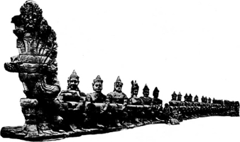
American Weekly’nin izniyle
Angkor, Kamboçya’dan Yedi Başlı Büyük Yılan
Bunlar bir yarı tanrının değil, tüm dünyaların Yüce Yaratıcısı’nın simgeleri.
Heykellerin boyunlarında ve arkalarında Anayurdun özenle işlenmiş sembolleri yer alıyor ve bunlar American Weekly’nin nezaketiyle sağlanmış fotoğrafta da belli belirsiz görülebiliyor. Öte yandan bu sembollerin, Angkor Fransız mandası altına girmeden yıllar önce yaptığım eskizlerine sahibim. O günlerde Angkor’a kıyıdan ulaşmak zorlu ve tehlikeli bir yolculuk gerektiriyordu ve bu yolculuk sırasında epey heyecanlı deneyimlerim oldu; fakat bu kâşifler için sıradan bir şey, olması gereken bu.
American Weekly’nin fotoğrafı haricinde bu iki oymanın resimlerini, deşifre ve tercümeleriyle birlikte paylaşıyorum. Yedi Başlı Yılan Kamboçya’da Naga ismini nasıl aldı? Bunun düşünebildiğim yalnızca tek bir yolu var: Tasarım Burma’ya on binlerce yıl önce anayurttan geldi, muhtemelen Nagalar tarafından taşınarak.
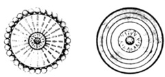
Yedi Başlı Büyük Yılan’ın üzerindeki oymalar
Angkor Thom’da
Merkezi figür: Lotus çiceği.
İlk çember: Işınlarla çevrelenmiş güneş resmi.
Işınlar: Üç bölüme ayrılmış.
Mu Ülkesi’nin sembolik rakamı.
Angkor Vat’ta
Dış çember: Güneş
3 iç çember: Mu’nun, ayrıca koloni
Ganesha: imparatorluklarının rakamı.
Merkezi figür: Anayurt Mu Ülkesi’nin Kraliyet Lotus’u
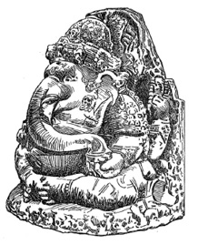
Ganesha, Tarlaların ve Ekinlerin Efendisi
Fil Ganesha: Tanrı’nın tarlalar, bahçeler ve
ekinlere bakan yüzünün sembolü.
Nagalar bir felaketle yok oldu ve ülkeleri yeniden yaşanabilir bir hâle geldiğinde topraklarına başka bir halk yerleşti. Yılana, onu getiren insanların ismini veren de bu halktı.
Hazır Angkor’dan bahsederken başka bir oymaya daha değinelim. Burada, arkeologların “aslan” olarak adlandırdığı alışıldık figürler var. Sembolik oldukları ağızlarının dikdörtgen şeklinden anlaşılabiliyor; bu Mu’nun sembollerinden biri. Bu yaratıklar ayağa kalkar gibi yontulmuşlar ve yüzleri doğuya, Mu’nun mezarının yönüne dönük. Angkor’un bir ucundan diğerine insan taşların aralıksız feryatlarıyla karşılaşıyor: “Mu, Mu, Anayurt!”
Çizimde Ganesha görülüyor. Kim olduğunu bilmeyenler tarafından takılmış birçok kötü adı var. Öte yandan Hintliler bu tanrının kim olduğunu biliyorlardı ve onun görüntüsünü çiçeklerle süslediler; zira Ganesha, tarla ve ekinlerle ilgilenen ve antik adı “Tarlaların ve Ekinlerin Efendisi” olan tanrının sembolüydü.
Bu sembol Mu ülkesinden gelmişti. Adının orada ne olduğunu bilmiyorum ama Ra Ma (Toprakların Tanrısı) veya Ra Mana (Tarla ve Ekinlerin Efendisi) olduğunu düşünüyorum. Yucatan’da PPeu hanedanlığından gelen krallar, ülkenin efendi ve sahipleri olduklarını iddia ederek, bunu kendi sembolleri hâline getirdiler.
Yucatan’da, PPeu hanedanı zamanında inşa edilen binaların göz önündeki kısımlarında fil başı heykelleri bulunuyor. Antik zamanlarda, hüküm süren kralların sembollerini saraylara ve idari binalara kazımak sıradan bir işti.
Bir Naga Hintli Bıçağı: Dünyadaki en eski bıçak olduğuna inandığım ve bir zamanlar antik Naga kralı tarafından ta-
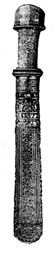
Bir Naga-Hindu Bıçağı
şındığı söylenen bir bıçağa sahibim. Daha önce de belirtildiği gibi Nagalar, Hindistan’a Burma üzerinden gelmiş Mayalardı. Deccan’a yerleştiler ve zamanla bu bölgeyi Naga İmparatorluğu olarak bilinen koloni imparatorluk hâline dönüştürdüler. Başkentleri, şimdi Nagpur şehrinin bulunduğu yerdeydi.
Naga İmparatorluğu’nun ne zaman yıkıldığı bilinmiyor. Efsaneler yaklaşık 5 bin yıl önceye işaret ediyor. Sayısız Hindu belgesi, efsanesi ve geleneği mevcut. Öte yandan Valmiki, bunun anayurdun ilk Hint Koloni İmparatorluğu olduğunu söylüyor.
Dikkatli bir inceleme bıçağın şimdiki ağzının, kabzaya takılan ilk ağız olmadığını gösteriyor. Takılı olan ağız çelikten değil, sert demirden dövülmüş. Sertleştirilmiş bakırdan bir perçinle kabzaya tutturulmuş. Bıçağın kına uymasını sağlamak için, ağzın kabzaya yakın olan kısmına bir halka eklenmiş. Tüm kanıtlar, asıl ağzın bronz ya da tavlanmış bakırdan üretildiğini ve kabzaya yakın ucunun kına bir halkaya gerek duymadan oturacak kadar kalın olduğunu gösteriyor. Bıçağın kabza ve kına gümüşten; bunların üzerine işlenmiş çok sayıda sembol, hiyeroglif ve Maya süsü bulunuyor.
Bıçağın yaşının yanı sıra, kabza ve kınının üzerine oyularak işlenmiş hiyeroglif ve semboller de oldukça dikkat çekici. Sembollerden özellikle biri, büyük bir araştırma çalışmasının yolunu açıyor. Bıçağın kabzasının iki yüzünde bulunan semboller, geleneksel çizimlerle bize bu bıçağı yapan insanların kim olduklarını ve nereden geldiklerini anlatıyor.
Şekil 1: İlk olarak kabzanın ön yüzündeki sembolü ele alacağım. Bu hem sembolik hem geleneksel bir grafik. Anayurdun sembolik rakamı olan 3’ün defalarca tekrarlanması, bu grafiğin anayurttan bahsettiğini açıkça gösteriyor.
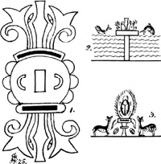
Bıçağın kabzasında ve kınında bulunan semboller
Betimlenen surat, iki dikdörtgenin ağzı ve burnu oluşturduğu alışıldık tasarımda. Bu sembol “Anayurt Mu” şeklinde okunuyor. Grafik tarafından desteklenen bu beyanı kanıtlamak zor değil. İlk olarak, taç ve başı süsleyen sorguçlar mevcut. Başlık üç parçadan oluşmuş, üç kez tekrarlanıyor. İkincisi, antik su testisi ve iki yanındaki soylu lotus filizleri sayesinde ülkenin suyun ortasında bulunduğunu ve bunun Mu, yani soylu lotusun ülkesi olduğunu anlatıyor.
Bu üçlü şeklin her iki yanında asıl üçlüyü oluşturan alışılmış bir sorguç var. Bu sorguçların her biri, kollara ayrılarak üç ayrı uç oluşturuyor. Alışılmış burun şeklinin her iki yanında hiyeratik “k” harfi var ve bu dört ana yönü; kuzey, güney, doğu ve batıyı belirtmek için kullanılırdı. Bunlar, sıradaki grafikte de görülebileceği gibi, iki ana yerleşim hattı yönünde, yani doğuya ve batıya bakan göz motifleri.
Yanaklar, ufku simgelemek için yay şeklinde gösterilmiş. İki ufukta da ışıksız yarımküreler hâlinde üçer güneş bulunuyor. Ufukta görülen ışıksız güneş bir koloniyi temsil ediyordu; eğer ışıkları varsa da bir koloni imparatorluğunu.
Şeklin alt kısmı, şeklin tamamını dengelemek ve sanatsal bir hava katmak için eklenmiş. Grafiğin her iki yanında tamamen açılmış soylu lotus yer alıyor, dolayısıyla anayurt Mu’dan bahsedildiği pekiştiriliyor. Bu bilgiler ışığında bıçağın Naga kolonisi zamanına ait olduğu sonucuna varılabilir.
Şekil 2: Kabzanın arka yüzünde Mu’yu suda ayakta durur hâlde gösteren bir çizim var. İki yanında, suyun yüzeyinde sıçrayan iki balıktan biri doğuya, diğeriyse batıya gidiyor. Bu sembol Hindistan’ın suyla anayurttan ayrıldığını ve Nagaların Hindistan’a varmak için okyanusu geçtiklerini anlatıyor. Seyahat yöntemleriyse suyun yüzeyinde bulunan, uçmak veya yüzmek yerine sıçrayarak ilerleyen balıkla, eğlenceli ve oldukça etkin bir biçimde anlatılmış. Antik Kalde rahibi ve tarihçisi Berosus, Akad-Mayalardan “yarı balık, yarı insan” şeklinde bahsediyor. Kabzanın geri kalanı sanatsal Maya desenleriyle süslenmiş.
Şekil 3: Kın, beş şerit hâlindeki belirgin Maya süsleriyle başlıyor. Bu şeritlerin altında bulunan, bileşik hiyeroglif formundaki şekil şüphesiz tüm arkeoloji araştırmacılarını hayrete düşürecek. Bunu Hindistan’da bulmak benim için son derece şaşırtıcıydı. Bu grafiğin merkezindeki figür, güneşin ışıkları arasında yükselen bir scarab (bok) böceği. Hemen altındaki, dünyanın veya “toprak ana”nın sembolü olan hiyeratik M harfi, burada verimliliğini göstermek için her iki ucundan sarkan klasik birer yaprak ile gösterilmiş. Dünyanın yüzeyinin altında hâlâ gün ışığına çıkmamış iki yavru scarab var. Yükselen scarabın her iki yanında ilk insanın sembolü olan geyik -Keh-bulunuyor ve bunlar tapınma hâlinde resmedilmiş. Bu, ilk insanın scarab (bok) böceğine tapındığını gösteriyor.
Scarab neyi temsil ediyor? Bu Hindistan içerisinde, hem yazı hem de oymalarda scaraba ilk rastlayışım. Scarab şimdiye dek hep Mısır’a özgü bir sembol olarak görülmüştü. Mısırlılar tarafından, Kephera olarak adlandırılan Yaratıcı’nın sembolü olarak seçilmişti. Kephera’nın başlığının üzerinde daima bir scarab bulunur. Kral II. Seti’nin katibi ve dostu olan Anana, harika resimlerle dolu papirüslerinden birinde, Mısırlıların scarabı Yaratıcı Tanrı’nın sembolü seçmelerinin nedenini şöyle açıklıyor:
“Scarap ayaklarıyla küçük çamur topları yuvarlar ve bu topların içine yumurtalarını bırakır. Mısırlılar bunun, Yaratıcı’nın dünyayı yuvarlayıp hayatla dolmasını sağlamasının mükemmel bir örneği olduğunu düşünüyor.”
Bu italik yazılmış kısım, eğer Büyük Kuvvetler’in köken ve işleyişlerini anlıyor olsa günümüz bilim insanını hayrete düşürürdü; zira burada Mısırlıların 3.000 veya 3.500 yıl önce Büyük Kuvvetler’in köken ve işleyişlerini anladıkları görülüyor. Bunları bundan sonra Hintli tercümelerini kullanarak açıklayacağım.
Anana bizi yalnızca 3.500 yıl geriye götürüyor, fakat bıçağın kınındaki oymalar bizi Mısırlıların Mısır’a gelmelerinden önceki bir zamana taşıyacak. Kabzanın önündeki sembol, bu kabza ve kının Nagaların yalnızca Hindistan’da bir koloni oldukları zamanda yapıldığını anlatıyor.
Şimdi Hindistan’daki Naga kolonisinin bir koloni imparatorluk hâline gelmeden önceki yaklaşık tarihini bulmaya çalışacağım:
Hindistan’daki Naga veya Maya İmparatorluğu’nda Prens Maya belirgin bir figürdü. Prens Maya’nın zamanı şüpheli. Onun hakkında birçok kayda rastladım, bunlardan biri bile ne zaman yaşadığını söylemiyor; fakat bir ağacın yapraklarından daha çok sayıda olan geleneklere göre, Prens Maya 15 bin ile 20 bin yıl önce yaşamıştı.
Ramayana’da onunla ilgili şu sözleri buluyoruz: “Geçmiş zamanlarda Nagaların, Maya adında bir prensleri vardı.”
Prens Maya, Hindistan’ın astronomi üzerine en büyük bilimsel eseri olan Sourya Siddhanta’nın yazarıydı. Çeşitli tahminler, bu eserin yaşının 10 bin ile 22 bin yıl arasında olduğunu söylüyor. Prens Maya’nın zamanında Nagalar bir imparatorluktu. Bu bıçağın kabza ve kını yapıldığında, Nagalar daha imparator hâline gelmemiş bir koloniydi. Yalnızca bir koloni oldukları ufkun üzerindeki ışıksız güneşlerle açıkça gösterilmiş. Bu da kabza ve kının aşırı eskiliğini kanıtlıyor.
Antik Maya Tableti: Bu, ince ve sert kum taşından yapılmış bir tablet. Zemini, üzerindeki şekiller bir inçin yaklaşık 1/16’sı kadar yukarıda bulunacak şekilde yontulmuş. Çemberin içinde, şekillerin oyulduğu alan açık sarı ve taşın kendi rengi oldukça cilalı bir mavi. Şekiller koyu kırmızı ve cam gibi sırlı. Bu renk düzenine Maya dönemi eserlerinde sıklıkla rastlanıyor. Tablet yaklaşık 4 inç yüksekliğinde. Alt kısmı bir taban oluşturacak şekilde geniş. Bunun, sahibinin evinin dikkat çeken bir köşesinde duran bir süs eşyası olduğu açık.
Tabletin Maya hiyeratiğiyle değil de anayurt tapınak yazıları ve Naga biçim düzeniyle yazılmış olması, bana arkasında yatan bir sır olduğunu düşündürüyor. Bu yazı türü yalnızca başrahipler ve diğer bazı yüksek mevkili rahip tarafından bili-
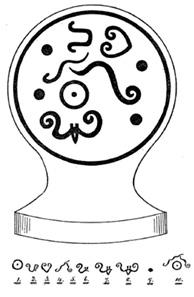
nirdi; dolayısıyla tabletin değeri yalnızca bu kast veya kutsal gizemleri öğrenmeye başlamış olan veliaht tarafından anlaşılabilirdi.
Şimdi tableti parçalara ayırıp deşifre ederek ne tür bir hikâye anlattığını göreceğim.
1. Yaratıcı -Büyük Yönetici- Kralların Kralı’nın sembolü ve tüm dünyanın hükümdarı anlamıyla Mu’yu temsil etmek için kullanılıyor. Codex Cortesianus, Mu’dan Büyük Yönetici diye bahsederek bu kullanımı uyguluyor.
2. Anayurdun alfabesinin hiyeratik U harfi ve dipsiz bir çukuru, bir deliği, büyük bir derinliği anlatıyor.
3. Bu, U harfiyle beraber üzerine veya içeri doğru hareket etmek anlamına gelen şeklin bir araya gelmesiyle oluşmuş bileşik bir sembol. Toprağın batışının gösterildiği yerlerde kullanılırdı.
4. Bu, okyanusun kabarmasına benzer bir hareketi simgeliyor. Suların antik sembolüydü.
5. Bu, yeraltının alevleriyle yeraltındaki bir yolun sembollerinin bir araya gelmesiyle oluşmuş bileşik bir sembol.
6. Bu bir kelime: Kui Diyarı.
7. Bu şekil iki kelime oluşturuyor: Kui Diyarı ölü.
8. Bu şekil bir cümle oluşturuyor: Kui Diyarı ölü ve suya gömülü.
9. Bu bir sütun ve deprem anlamlarına gelen bir sembol.
10. Büyük Yönetici bir ateş uçurumuna düşüyor. Şimdi cümleleri birleştirerek bir açıklama oluşturacağım.
Açıklama: Kui Diyarı, Dünya’nın Büyük Yönetici’si artık yok. O, birçok yerde depremlerle yukarı aşağı sarsıldı ve toprak okyanus dalgaları gibi kabardı. Sonunda onu taşıyan sütunlar çöktü ve o bir ateş uçurumuna düştü. Büyük Yönetici batarken alevler yükselip onun her yanını sardı. Sonra da sular üzerine aktı ve battı Kui diyarı, Büyük Yönetici.
Açıklamayı yazarken tabletin üzerindeki yazılara tam anlamıyla sadık kaldım. Burada yaptığım yalnızca antik bir dili modern bir dile çevirmek, böylece sıradan bir insan da bu tabletin üzerindekileri bir bilim adamı kadar iyi anlayabilir.
Yaratıcı’nın İnsana Ruh Verdiği Yer Olan Mu’nun Bronz Bir Heykelciği: İnsan bu şekilde diğer yaratımlar arasında özel bir yer kazandı. Uyuyan bir kadın olarak betimlenen figür Mu, Ma veya Ana’ya ait. Gözlerinin kapalı oluşu, henüz yaşam bulmadığını gösteriyor. Ruh, sol omzuna tünemiş ve vücuda girmeye hazırlanan insan başlı bir kuş şeklinde gösterilmiş. Bu simgeleme çok ilginç, çünkü Mısır Ölüler Kitabı’nın 17, 29, 85, 91. ve diğer bölümlerinde insan ruhunun insan başlı bir şahin şeklinde betimlendiğini görüyoruz. Mısır tasviri, heykelden 2 ila 5 bin yıl daha ileri bir tarihe ait. Bu bronz eserin yaşı biraz da nerede üretilmiş olduğuna bağlı. Bu, anayurt olabileceği gibi Uygur Koloni İmparatorluğu da olabilir. Bir sanat eseri olarak, güzelliği ve işçiliğinin mükemmelliğiyle, günümüzün en zarif yapıtlarıyla yarışabilecek seviyede. Tarihini eksiksiz bilsem de nereden geldiğinden ve Amerika’ya nasıl ulaştığından ötesini anlatma hakkına sahip değilim. Bu eser yıllarca bir tavan arasında tozlarla kaplı yattıktan sonra, şimdi bir kasada duruyor.
Yaratıcı’dan insan ruhunu alan Mu’nun bronz bir heykelciği: Bu fikre, insan başlı kartalın (resimde soldaki omza tünemiş olan) ruhu temsil ettiği Mısır “Ölüler Kitabı”nda birçok kez rastlanıyor.
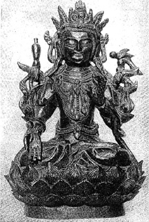
James GerhardLeiper, Jr.’ın izniyle
Yaratıcının insana ruh verdiği yer olan Mu’nun broz bir heykelciği
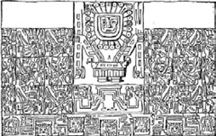
Tiahuanaco’daki Büyük Yekpare Anıt
Geçen yüzyılın bir bölümünde Çin’de yaşanan büyük bir toplumsal karışıklık sırasında birçok saray ve tapınak yağmalandı. Okuyucu bu bronz heykelciğin nereden geldiğini tahmin edecektir. Oldukça değerli başka antikalarla beraber limanda demirli bir Amerikan savaş gemisine getirildi ve bu geminin bir subayına satıldı. Antikalar bu subayın torunlarının ailelerinde bulunuyor ve ne kadar değerli oldukları yeni öğrenilmiş durumda.
Tiahuanaco, Peru’daki Büyük Yekpare Anıt: Bu devasa kaya, ona bakan veya resmini gören tüm arkeologlar için büyük bir harika ve gizem olmayı sürdürüyor. Arkeologlar için bu dünyanın harikalarından biri. Titicaca Gölü’nün kıyılarında, Pasifik Okyanusu’nun seviyesinin 13.500 feet üzerinde, bir tapınağın harabeleri arasında yatıyor.
Bu kayayla ilgili birçok şey söylendi ve çeşitli yazarların hemfikir olduğu şu: “Eğer deşifre edilip okunabilseydi, kim bilir antik geçmişle ilgili ne kadar harika bir hikâye anlatırdı!” Kaya gerçekten de harika bir hikâye anlatıyor, zira okuyucuları 16 bin yıl geriye, anayurt Mu’nun henüz bir ateş uçurumuna düşüp insanlığı binlerce yıl sürecek bir yasa sürüklemeden, dünyaya gururla hükmettiği çağlara götürüyor. Thoth idaresinde, Mısır ve Nil Deltası’ndaki ilk yerleşimlerin yapıldığı zamanları, Mısır uygarlığının şafağını anlatıyor.
Tapınak, muhteşem işlenmiş taşlarıyla inşa edildiği zamanlarda And Dağları henüz oluşmamış, Güney Amerika’nın batı çayırlıkları boyunca yukarı fırlatılmamışlardı. Ülkeyi, halkının çoğunu ve bu tapınağı yok eden şey de dağların yükselişiydi ve bu sırada bu devasa kaya iki parçaya ayrıldı.
Birçok yazarın bu kayayı İnkalara mal ettiğini görüyorum. İnkalar, Peru’ya bu tapınağın inşa edilmesinin üzerinden 15 bin yıl geçtikten sonra geldiler. İnkalar (Quicheler) Peru’ya ulaştıklarında And Dağları binlerce yıldır ayaktaydı.
Bu harika, yaşlı bir taş ve uzun süre kullanılmış hiyeratik bir alfabenin varlığına rağmen üzerinde tek bir harf bile yok. Üzerindeki oymalar ilk yazı örneklerine benzerlik gösteriyor: Bir araya gelen sembollerin oluşturduğu bir resim ve resimlerin oluşturduğu bir yazı. Bu tarihe ait fakat hiyeratik yazılar bulundurmayan bir oyma bulmak oldukça tuhaf, yine de bu yazılar olmadan resimleri okumak günümüzde matbaadan çıkmış bir kitabı okumak kadar kolay. Tek gereken sembollerin anlamları hakkında bilgi. Bu kayanın işçiliği, alet kullanımında büyük bir yeteneği ve sanatçılığı ortaya koyuyor.
Şimdi anayurdun, özellikle koloni imparatorluklarında kullanılan sembollerinin yardımıyla bu tableti deşifre edecek ve size okuyacağım:
Oymanın resmine bakılınca göze en dikkat çekici gelen parça klasik bir insan başı; başın en dikkat çekici noktası ise içine üç rakamının kaç defa işlendiği. Üç, daha önce de belirttiğim gibi, Mu’yu temsil eden rakamdı. Şimdi figürün başını parçalarına ayırarak inceleyeceğim:
Baş, üst üste gelerek bir arma oluşturan üç katmandan oluşuyor; en üstteki katman insan yüzünü andıracak biçimde oyulmuş. Yukarısında üç tüyden oluşmuş bir sorguç ve aşağısında figürün üzerinde oturduğu üçlü taht bulunuyor. Her yanakta üç benek var. Zırhlı göğüslüğün, eğer şekildeki buysa, üzerinde Mu’nun sembollerinden biri olan (geometrik ve alfabetik) üç dikdörtgen mevcut.
Asanın ucu üç macaw papağanı başıyla süslenmiş. Ağzın şekli de alışıldığı üzere bir dikdörtgen. Burada dokuz kez Mu adı geçiyor. Baş, dört gruba ayrılmış ışınlarla çevrelenmiş. Bu ışınlardan tam bir çember oluşturuyor ve “Güneş İmparatorluğu Mu” şeklinde okunan sembolün bir parçası. Her ışının ucunda bulunan ? ise Ahau, yani Kralların Kralı; dolayısıyla burada anlatılan şu: “Güneş İmparatorluğu’nun İmparatoru, tüm dünyevi kralların kralıydı.”
Asanın ucundaki macaw başları bir koloni sembolü. Bu, Mayax Kraliçesi Moo’nun totemi ve asayla birleşik olması, Mayax’ın anayurda bağlı bir devlet veya onun bir koloni imparatorluğu olduğunu gösteriyor. Armanın yukarı çaprazı ve yanlarındaki ışınların uçlarında birer leopar başı bulunuyor. Leopar, Kraliçe Moo’nun kardeşi ve kocası olan Prens Coh’un totemiydi. Alt çaprazlarda yılan başları, yani Can hanedanının sembolü görülüyor. Dolayısıyla merkezi figür bize Mayax’ı Can ailesinden gelen kocası Coh ile birlikte Kraliçe Moo’nun yönettiğini ve Mayax’ın, Mu’nun koloni imparatorluklarından biri olduğunu anlatıyor.
Aşağıdaki şeridin üzerine yontulmuş on yedi küçük baş var ve her başın üzerinde ve iki yanında toprak anlamına gelen semboller bulunuyor. Bunun tam olarak ne anlama geldiğini söyleyemem. Mu’nun on yedi kolonisinin bulunduğunu anlatıyor olabilir, fakat gerçek anlamı bu olmayabilir de.
Bu şeridin yukarısında kanatlı figürlerden oluşan üç şerit var. Orta sıradaki figürler macaw başına sahip, bu, Kraliçe Moo’ya olan bağlılıklarını gösteriyor. Diğer iki sıradakilerinse insan başları var ama onlar da taçlarında kraliçenin totemini taşıyor ve bu sayede onun hükümdarlığını tanıdıklarını gösteriyorlar. Tüm bu figürler, Mayax’ı yöneten on iki Maya hanedanının sembolü olan on iki yılan deseniyle süslenmiş.
Resmin tamamı bir araya gelince, tapınağın inşa edildiği bu ülkenin sakinlerinin, Kraliçe Moo ve kocası Coh’un hüküm sürdüğü zamanlarda, Mayax’ın egemenliğinde veya bir alt kolonisi hâlinde olduklarını gösteriyor.
Troano Elyazması’na göre Kraliçe Moo, Nil Deltası üzerindeki Sais’te bulunan Maya kolonisini kurulduğu ilk yüzyıl içinde ziyarete gitmiş ve burada koloninin kurucusu Thoth ile tanışmıştı. Nil kolonisi 16 bin yıl önce kurulduğuna göre, Tiahuanaco’daki bu büyük anıt da yalnızca 16 bin yıl önce yontulmuştu.
Anarajapura Oyma Taşı, Sri Lanka: Bu taş, yarımküre şekli nedeniyle Anarajapura’yı ziyaret eden arkeologlar tarafından “Anarajapura Aytaşı” ismiyle anılıyor. Bu taşlardan birkaç tane var ve bunlar tapınağa çıkan merdivenin aşağısına yerleştirilmiş. Bunun, Singalaların kim olduklarını ve nereden geldiklerini anlatan sembolik bir taş olması, arkeologlar tarafından göz ardı edilmesine neden olsa da üzerindeki yazılar gayet açık ve net. Taşın merkezi çiçek açmış, klasik fakat ayrıntılı bir lotus şeklinde oyulmuş. Bu, şüphesiz insanoğlunun anayurdu Mu ülkesinin sembolü. Doğu geleneklerinin anlattığı kadarıyla bu anlamı kazanmasının sebebi, dünya yüzünü süsleyen ilk çiçek olması. Bu geleneklerin doğruluğuna ve lotusun gerçekten de dünyada ortaya çıkan ilk çiçek olduğuna inanmamak için hiçbir neden yok.
Taşın üzerine kazınmış bazı yarım halkalar var, bu Mu kolonilerinin sembollerinden biri. Dıştaki şeridin hayvan figürlerin ötesinde kalan kısmının kötü durumu yüzünden burada anlatılanın sıradan bir koloni mi, yoksa bir koloni imparatorluğu mu olduğunu söyleyemiyorum. Lotusun dışında dekoratif bir şerit bulunuyor. Bu, eğer suyu temsil etmiyorsa sembolik bir önem taşımıyor. Bu da kesin bir sonuca varabilmek için fazla belirsiz. Bir sonraki şerit bir ördek kafilesinden oluşuyor ve yerleşimcilerin Sri Lanka’ya nasıl geldiklerine işaret ediyor. Ördekler gibi onlar da suyun yüzeyinde yolculuk ederek bu ülkeye ulaştılar, yani gemileriyle. Ördek kafilesinin dışında yalnızca dekoratif amaç taşıdığı bariz olan, ördek kafilesiyle bir hayvan kafilesi arasında sanatsal bir geçiş sağlamak amacıyla oyulmuş bir şerit yer alıyor. Hayvan kafilesi de üçlü gruplara ayrılmış, bu da anayurdun sembolik rakamı. Serbest okumayla bu taşın üzerindeki sembollerin anlattığı şu:
“Sri Lanka’ya gelen bu insanlar, oraya tekneleriyle, bir Mu kolonisinden geldiler; ataları da o koloniye anayurttan gelmişti.”
Anarajapura, 2.200 yıllık yaşıyla eski bir şehir değildi fakat Hintli bilge ve tarihçi Valmiki’nin de anlattığı gibi, o kurulmadan önce Sri Lanka en az 10 bin yıl boyunca savaşçı bir ırkın işgali altında kalmıştı.
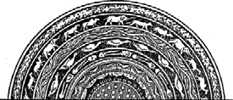
Anarajapura, Sri Lanka. Akrelogların
“Aytaşları” adını verdikleri taşlardan biri.